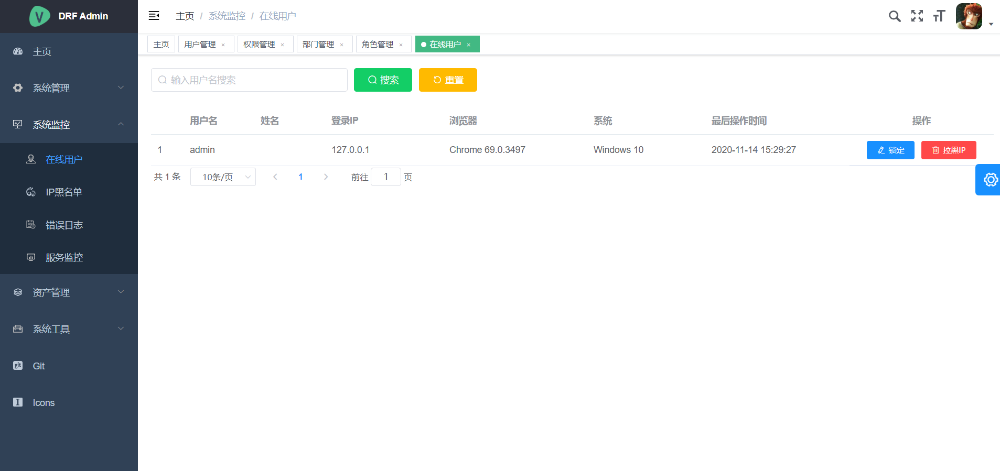
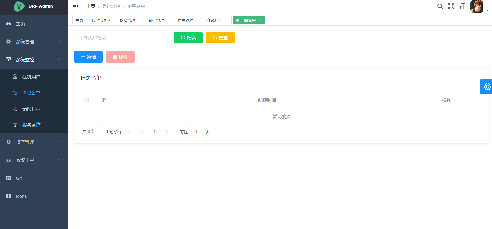
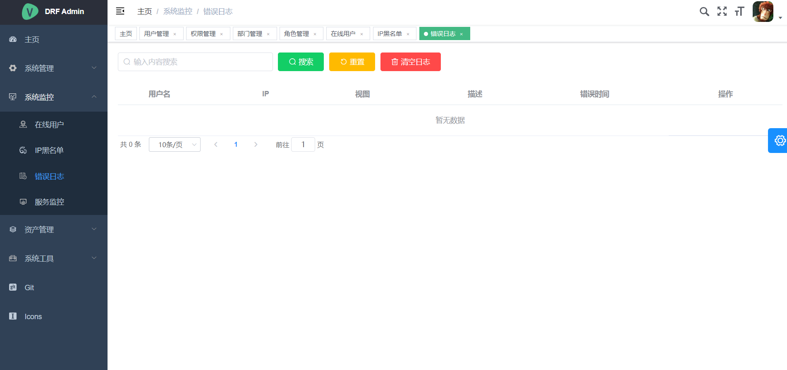
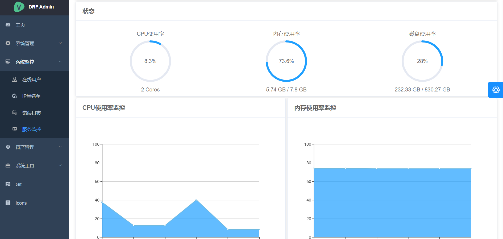

drf admin
基础简介
1. 前序准备
2. 功能介绍
3. 目录结构
项目启动
1. 后端安装及启动
2. 前端安装及启动
项目预览
1. 登录页
2. 主页
3. 系统管理
4. 系统监控
4.1. 在线用户
4.2. IP黑名单
4.3. 错误日志
4.4. 服务监控
5. 资产管理
6. 系统工具
7. 个人中心
drf admin
»
4.
系统监控
View page source
4.
系统监控
¶
4.1.
在线用户
¶

4.2.
IP黑名单
¶

4.3.
错误日志
¶

4.4.
服务监控
¶
